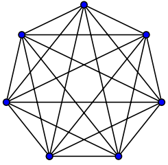

Grafos: Arboles de Expansión Mínima (MST)
Un poco en Contexto:
En grafos, un Árbol de Expansión consiste en tomar todos los vértices del grafo y algunos de sus arcos tal que ese grafo continue siendo conexo (existe un camino sin ciclos entre dos nodos cualquiera).
Para un grafo conexo, no dirigido y con pesos se debe seleccionar un subconjunto de arcos, de tal manera que y que el peso total de todos los arcos seleccionados sea mínimo.
Para poder cumplir con este criterio de conectividad, se deben elegir los V - 1 arcos que formen el arbol que cubra(conecte) todos los nodos V del grafo.
Un grafo puede tener más de un Arbol de Expansión Mínima con el mismo costo.
Algoritmos
- Algoritmo de Kruskal
- Algoritmo de Prim
Algoritmo de Kruskal
- Ordenar todos los arcos de menor a mayor peso (implementar una lista de arcos)
- Tomar cada uno de los arcos ordenados y si no forma ciclo añadirlo al árbol.
Un Disjoint Set sirve de gran ayuda en la detección de los ciclos de manera óptima.
- Inicialmente, cada vértice es un conjunto
- Al agregar un nuevo arco, se verifica que los vértices de ese arco no hagan parte del mismo conjunto; con esto detecto posibles ciclos al ir generando el árbol.
Algoritmo de Prim
- Procesar: Tomar un nodo inicial, marcarlo como visitado.
- Procesar: Añadir a la cola de prioridad todos sus arcos (omitiendo aquellos arcos cuyo nodo destino ya haya sido visitado)
- Prim: Mientras que la cola de prioridad no se encuentre vacia, se evalua cada uno de los arcos que se encuentran en ella.
- Prim: Si el nodo del arco que se esta evaluando no ha sido visitado aún, se elige este arco y se procesa este nodo.
¿Cuándo usar Kruskal y cuándo Prim?
Hablemos de grafos densos y dispersos...
Grafos Densos
Les faltan muy pocas aristas de todas las posibles.
Grafos Dispersos

Tienen relativamente pocas aristas.
- En grafos dispersos es conveniente usar el algoritmo de Kruskal
- En grafos densos es conveniente usar el algoritmo de Prim
Otras aplicaciones
- Maximum Spanning Tree
- Minimum Spanning Subgraph
- Minimum Spanning Forest
- Second Best Spanning Tree